FilonQuadrature¶
- class FilonQuadrature(*args)¶
Tensorized integration algorithm of Gauss-Legendre.
- Parameters
- nint,

The discretization used by the algorithm. The integration algorithm will be regularly discretized by 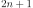 points.
- omegafloat
The default pulsation in the oscillating kernel. Default value is 1.0.
- kindint, 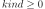
The type of oscillating kernel defining the integral, see notes. Default value is 0.
- nint,
Notes
The Filon algorithm enables to approximate the definite integral:
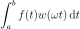
with 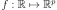, 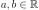, and:
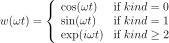
This algorithm is based on a regular partition of the interval
![[a,b]](../../_images/math/310c43f757c361df5cb03687d2833c6d3b5cadc7.svg) , the
function
, the
function  being approximated by a quadratic function on three consecutive
points. This algorithm provides an approximation of order 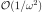
when 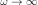. When 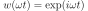,
the result is returned as a
being approximated by a quadratic function on three consecutive
points. This algorithm provides an approximation of order 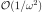
when 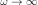. When 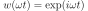,
the result is returned as a Pointof dimension 2, the first component being the real part of the result and the second component the imaginary part.Examples
Create a Filon algorithm:
>>> import openturns as ot >>> algo = ot.FilonQuadrature(100) >>> algo = ot.FilonQuadrature(100, 10.0)
Methods
Accessor to the object's name.
getId()Accessor to the object's id.
getKind()Accessor to the kind of oscillating weight defining the integral.
getN()Accessor to the discretization of the algorithm.
getName()Accessor to the object's name.
getOmega()Accessor to the default pulsation.
Accessor to the object's shadowed id.
Accessor to the object's visibility state.
hasName()Test if the object is named.
Test if the object has a distinguishable name.
integrate(*args)Evaluation of the integral of 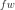 on an interval.
setKind(kind)Accessor to the kind of oscillating weight defining the integral.
setN(n)Accessor to the discretization of the algorithm.
setName(name)Accessor to the object's name.
setOmega(omega)Accessor to the default pulsation.
setShadowedId(id)Accessor to the object's shadowed id.
setVisibility(visible)Accessor to the object's visibility state.
- __init__(*args)¶
- getClassName()¶
Accessor to the object’s name.
- Returns
- class_namestr
The object class name (object.__class__.__name__).
- getId()¶
Accessor to the object’s id.
- Returns
- idint
Internal unique identifier.
- getKind()¶
Accessor to the kind of oscillating weight defining the integral.
- Returns
- kindint
The oscillating weight function defining the integral, see the notes.
- getN()¶
Accessor to the discretization of the algorithm.
- Returns
- ninteger
The discretization used by the algorithm.
- getName()¶
Accessor to the object’s name.
- Returns
- namestr
The name of the object.
- getOmega()¶
Accessor to the default pulsation.
- Returns
- omegafloat
The pulsation used in the integrate method if not explicitly given.
- getShadowedId()¶
Accessor to the object’s shadowed id.
- Returns
- idint
Internal unique identifier.
- getVisibility()¶
Accessor to the object’s visibility state.
- Returns
- visiblebool
Visibility flag.
- hasName()¶
Test if the object is named.
- Returns
- hasNamebool
True if the name is not empty.
- hasVisibleName()¶
Test if the object has a distinguishable name.
- Returns
- hasVisibleNamebool
True if the name is not empty and not the default one.
- integrate(*args)¶
Evaluation of the integral of on an interval.
- Available usages:
integrate(f, interval)
integrate(f, interval, omega)
- Parameters
- Returns
- value
Point Approximation of the integral. Its dimension is
 if
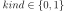, otherwise it is
if
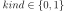, otherwise it is  with the first
components corresponding to the real part of the integral and the remaining
ones to the imaginary part.
with the first
components corresponding to the real part of the integral and the remaining
ones to the imaginary part.
- value
Examples
>>> import openturns as ot >>> import math >>> f = ot.SymbolicFunction(['t'], ['log(1+t)']) >>> a = 0.5 >>> b = a + 8.0 * math.pi >>> n = 100 >>> omega = 1000.0 >>> kind = 0 >>> algoF = ot.FilonQuadrature(n, omega, kind) >>> value = algoF.integrate(f, ot.Interval(a, b)) >>> print(value[0]) -0.00134... >>> kind = 1 >>> algoF = ot.FilonQuadrature(n, omega, kind) >>> value = algoF.integrate(f, ot.Interval(a, b)) >>> print(value[0]) 0.00254... >>> kind = 2 >>> algoF = ot.FilonQuadrature(n, omega, kind) >>> value = algoF.integrate(f, ot.Interval(a, b)) >>> print(value[0]) -0.00134... >>> print(value[1]) 0.00254...
- setKind(kind)¶
Accessor to the kind of oscillating weight defining the integral.
- Parameters
- kindint
The oscillating weight function defining the integral, see the notes.
- setN(n)¶
Accessor to the discretization of the algorithm.
- Parameters
- ninteger,
The discretization used by the algorithm.
- ninteger,
- setName(name)¶
Accessor to the object’s name.
- Parameters
- namestr
The name of the object.
- setOmega(omega)¶
Accessor to the default pulsation.
- Parameters
- omegafloat
The pulsation used in the integrate method if not explicitly given.
- setShadowedId(id)¶
Accessor to the object’s shadowed id.
- Parameters
- idint
Internal unique identifier.
- setVisibility(visible)¶
Accessor to the object’s visibility state.
- Parameters
- visiblebool
Visibility flag.